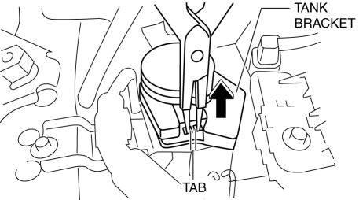
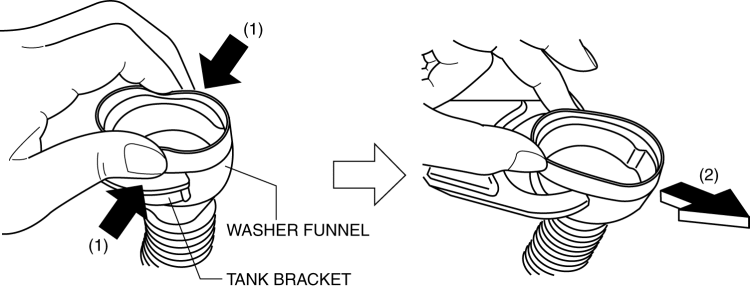
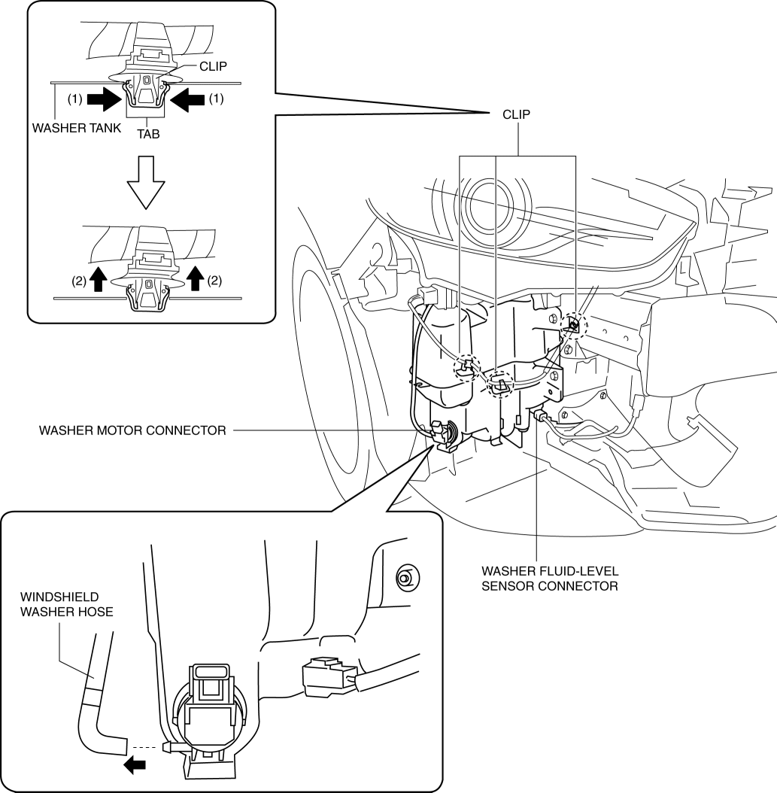
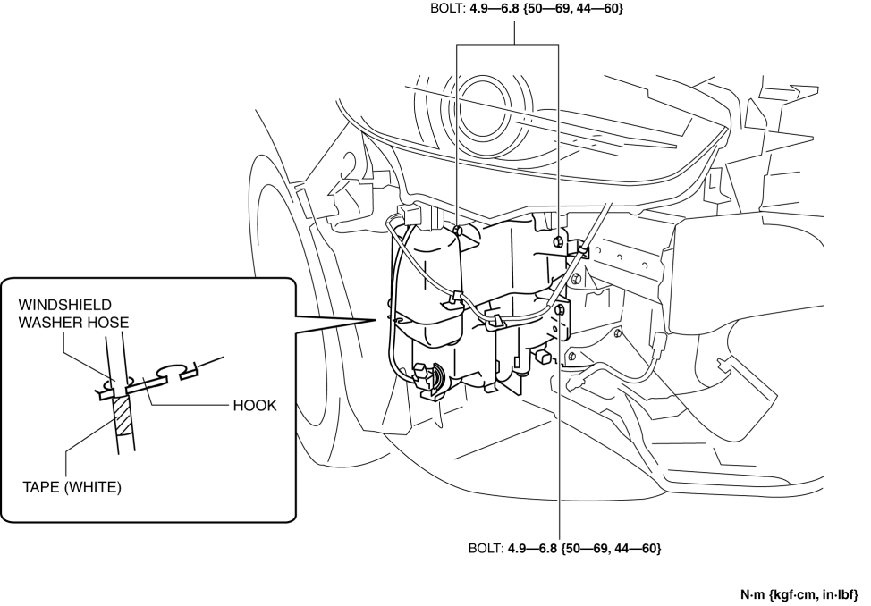
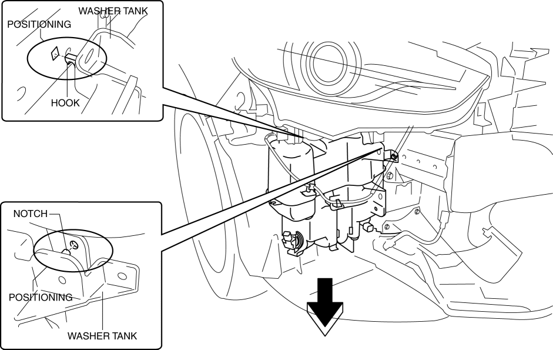
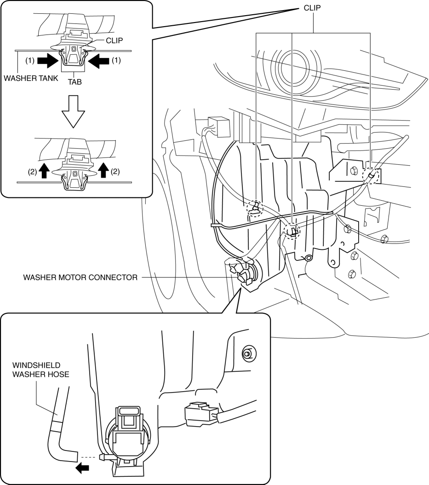
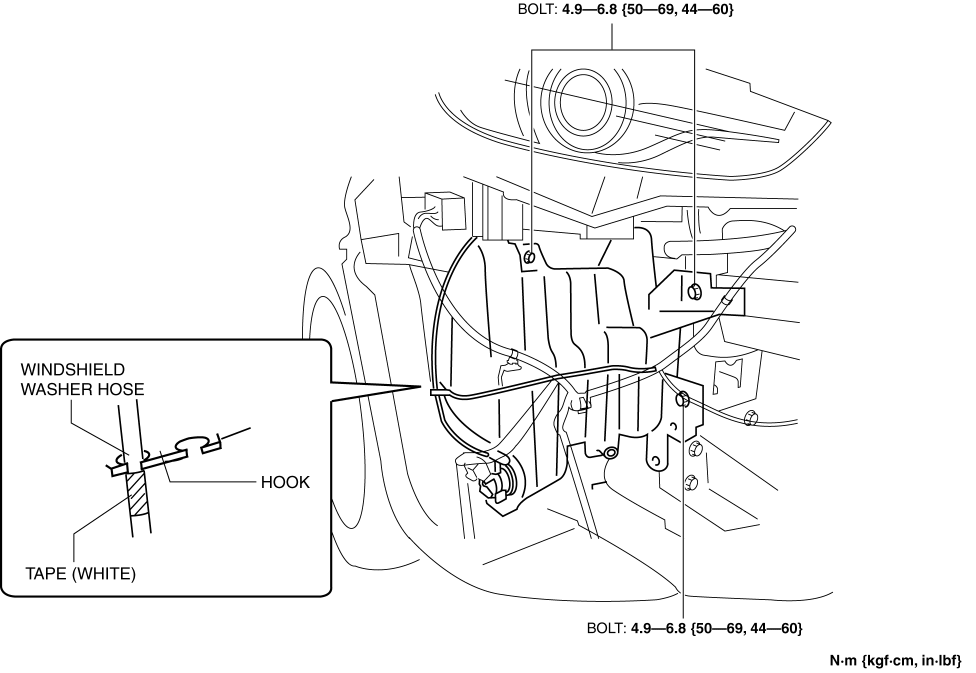
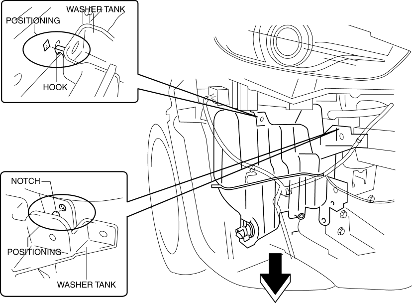

< Previous
Next >
2014 -
Mazda6 -
Body and Accessories
WASHER TANK REMOVAL/INSTALLATION
With Washer Fluid-level Sensor
1. Disconnect the negative battery cable. (See NEGATIVE BATTERY CABLE DISCONNECTION/CONNECTION [SKYACTIV-G 2.5].)
2. Set the mudguard aside. (See MUDGUARD REMOVAL/INSTALLATION.)
3. Remove the front bumper. (See FRONT BUMPER REMOVAL/INSTALLATION.)
4. Remove the tank bracket in the direction of the arrow while detaching tab.

5. Remove the tank cap.
6. While lightly pressing the upper part of the washer funnel in the direction of the arrows (1) shown in the figure, remove it from the tank bracket in the direction of the arrow (2).

7. Disconnect the washer motor connector.
8. Disconnect the washer fluid-level sensor connector.
9. Disconnect the windshield washer hose.
10. While pressing the tabs of the clips in the direction of the arrows (1) shown in the figure, remove it in the direction of the arrow (2).

11. Remove the windshield washer hose from the hooks.
12. Remove bolts.

13. Remove the washer tank positioning hook and notch from the vehicle and remove the washer tank.

14. Install in the reverse order of removal.
Without Washer Fluid-level Sensor
1. Disconnect the negative battery cable. (See NEGATIVE BATTERY CABLE DISCONNECTION/CONNECTION [SKYACTIV-G 2.5].)
2. Set the mudguard aside. (See MUDGUARD REMOVAL/INSTALLATION.)
3. Remove the front bumper. (See FRONT BUMPER REMOVAL/INSTALLATION.)
4. Remove the tank bracket in the direction of the arrow while detaching tab.
5. Remove the tank cap.
6. While lightly pressing the upper part of the washer funnel in the direction of the arrows (1) shown in the figure, remove it from the tank bracket in the direction of the arrow (2).
7. Disconnect the washer motor connector.
8. Disconnect the windshield washer hose.
9. While pressing the tabs of the clips in the direction of the arrows (1) shown in the figure, remove it in the direction of the arrow (2).

10. Remove the windshield washer hose from the hooks.
11. Remove bolts.

12. Remove the washer tank positioning hook and notch from the vehicle and remove the washer tank.

13. Install in the reverse order of removal.
< Previous
Next >
© 2012 Mazda North American Operations, U.S.A.